Coursework
- Team Project
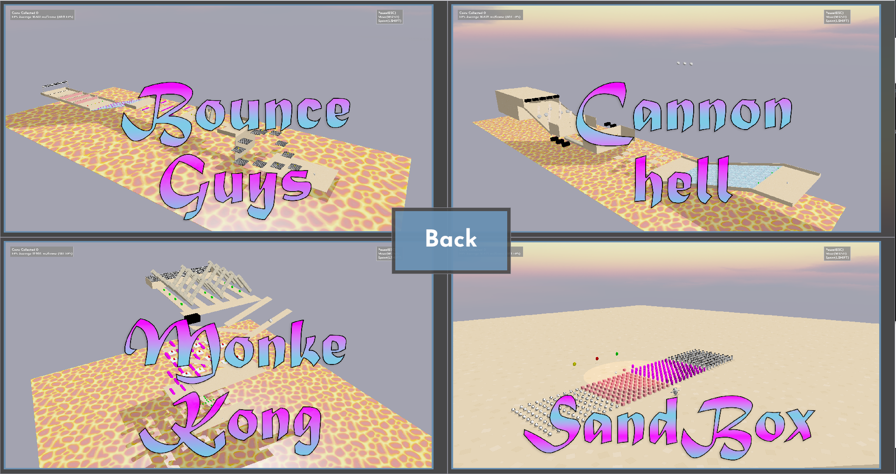
- 2021
- C++, physX ,Wwise, IMGUI, OpenGL
- A small multiplayer game based on work from the Advanced Game Technologies module
- Worked primarily on level and obstacle design
- Advanced Game Technology
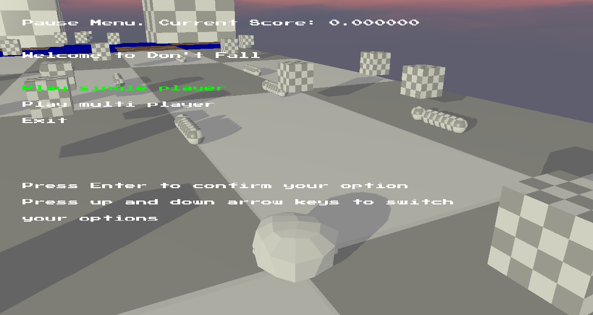
- 2021
- C++, openGL
- A small single player game based on Fall Guys
- Advanced Graphics
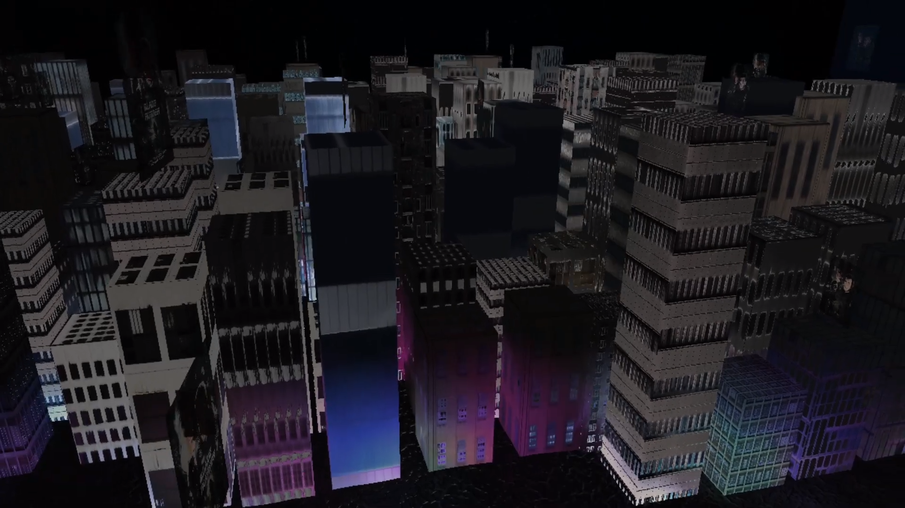
- 2020
- C++, openGL, GLSL
- A test scene inspired by cyberpunk style environments
- Uses advanced rendering techniques, such as deferred rendering, and environment mapping
- Advanced Programming
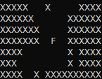
- 2020
- C++
- An ASCII maze game which plays itself
- Uses techniques such as A* path finding to complete the game automatically
- Checks to make sure that a maze can be completed
- Mazes can be saved to files, and loaded from them
- Games Development
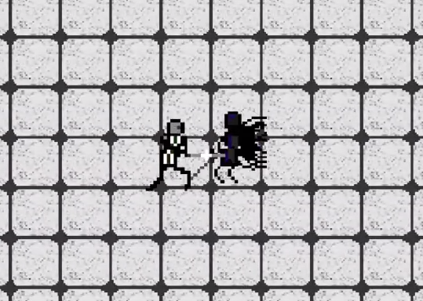
- 2020
- GDevelop
- A short demo game called "Fight Knight"
- Based loosely on the "Souls" combat style
- Includes original music, artwork and animations
- Project and dissertation (Year 3)
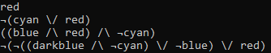
- 2019
- C#, Unity
- Designed to generate structure for rogue-like levels
- Uses set theory and a custom ALL-SAT solver to check possible completion, and ensure optimal complexity
- Can be used to verify existing games, run as a single use program to generate a level which can be saved, or at runtime
- Designed to generate structure for rogue-like levels
- Also created for use as a "black box" middleware style tool
- Project and dissertation (Year 4)
- 2021
- C#, OpenTK, OpenAL
- Ongoing project creating a light weight state machine AI with simulated emotions
- The project is designed for use within Shuttle Engine
- Also allows for testing in a more realistic scenario than within a third party engine
Personal Projects
- Shuttle Engine
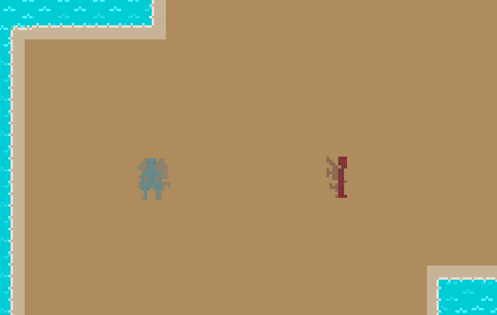
- 2020
- C#, OpenTK, OpenAL
- A light weight engine designed to do the absolute minimum to run a game
- Designed to run with other existing projects, with plans to run it on low power consoles, such as the 3DS or PS Vita
- 0xBot
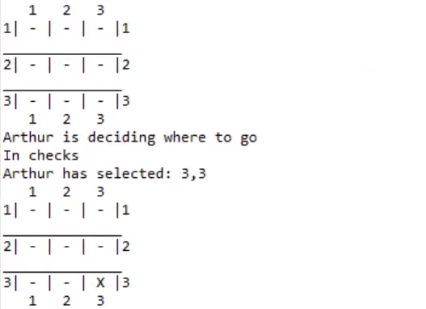
- 2018
- Java
- A console based computer opponent for Naughts and Crosses
- Reads the board to check for given scenarios, and asses threats and potential openings
- Includes additional features, such as possible variance to allow the AI to make mistakes
- AI Gif Player
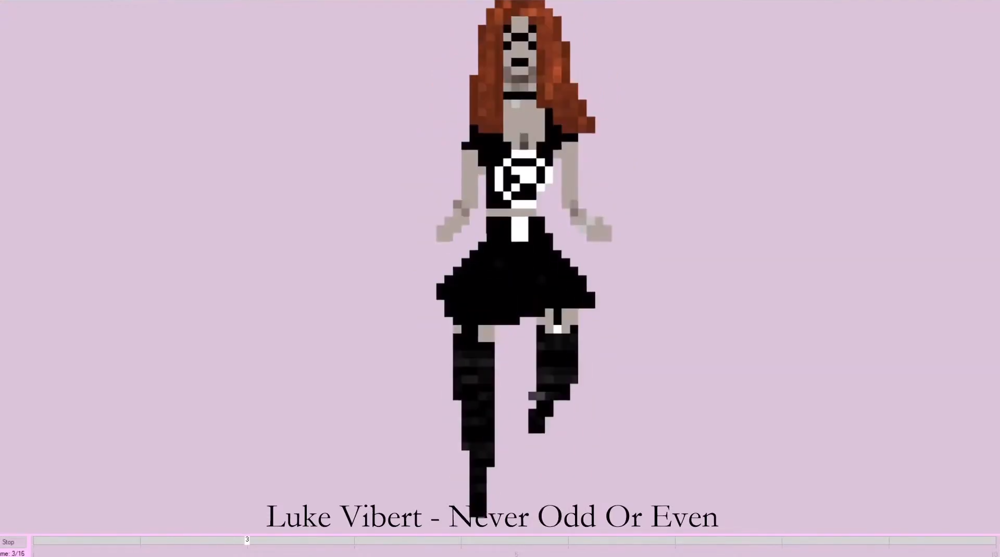
- 2020
- C#, GIF Viewer
- Added a state machine onto a GIF player to control animations
- Also adjusts speed to match BPM of the current track
- Astron
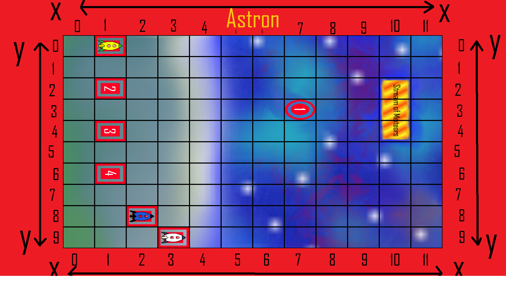
- 2018
- Java
- My first attempt at making a game
- A recreation of a family favourite board game, which is rare and falling apart
Snippets
- iPod modification
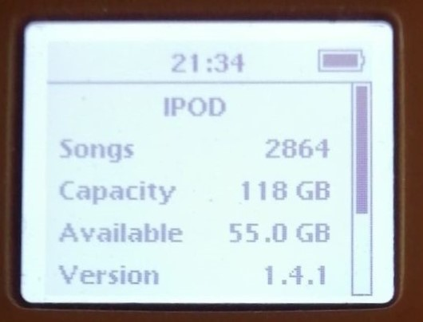
- 2020
- A small scale project adding flash memory to iPods (iPod Videos and iPod Mini 2nd Gen)
- Also included refurbishing with new parts, such as new housing and batteries
- Mixer
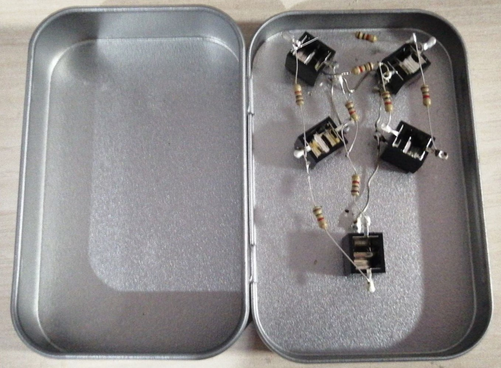
- 2020
- Home made 4 in 1 out 3.5mm audio mixer
- Custom made to work with synthesizers in a "DAW-less" set up
- Used cheap parts and soldering to get a simple working product
- AV set up
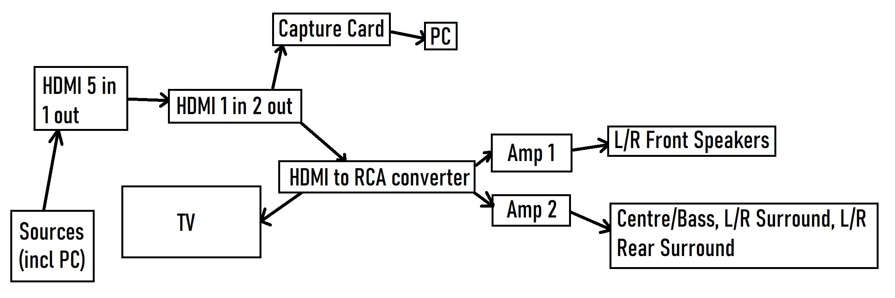
- 2020
- Custom home cinema set up, designed to work around multiple consoles, video capture, and existing Hi-Fi units
- Uses fairly complex wiring to get the most out of minimal hardware on a budget
- Sally Lewis dissertation
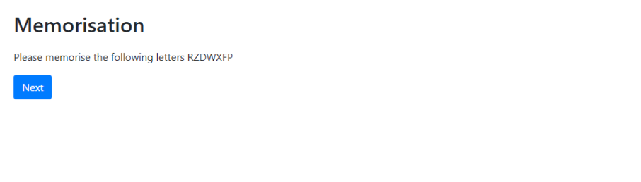
- 2020
- Python, O Tree
- Assistance on a project assessing economic theories
- Used python and O Tree to create a multiplayer experiment, wherein the theory could be automated and tested
- Zoom taskmaster
- 2020
- Zoom, Powerpoint, OBS, OpenShot Video Editor
- A homemade episode of taskmaster with original tasks
- Organised, edited, and filmed entirely by me